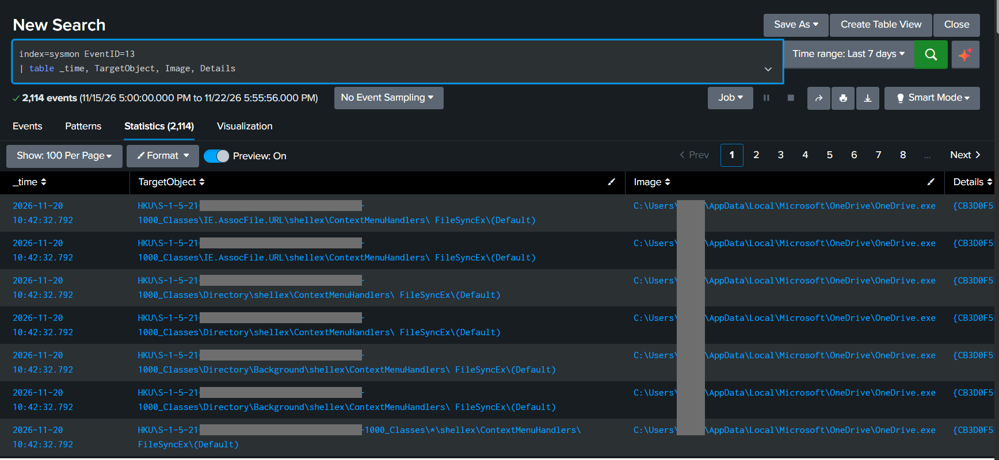
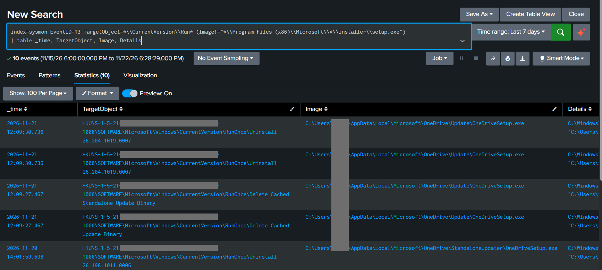

04 · Persistence via Run keys
A new value being written to the ...\CurrentVersion\Run, RunOnce or RunOnceEx keys.
Attack
Invoke-AtomicTest T1547.001 -TestNumbers 1
reg query "HKCU\SOFTWARE\Microsoft\Windows\CurrentVersion\Run"
Invoke-AtomicTest T1547.001 -TestNumbers 1 -Cleanup
# Repeat test: HKLM RunOnceEx
Invoke-AtomicTest T1547.001 -TestNumbers 2Detection (SPL)
Final version
index=sysmon EventID=13 TargetObject=*\\CurrentVersion\\Run* (Image!="*\\Program Files (x86)\\Microsoft\\*\\Installer\\setup.exe")
| table _time, TargetObject, Image, DetailsFalse positives and tuning
When I looked at all Sysmon 13 events, there were 2,114 in 7 days. At first I thought I had written the query wrong. After checking the logs, I saw that most of them came from applications on the computer, mostly OneDrive's right-click menu registrations. So I narrowed the query to the Run keys, and 11 events were left. Apart from the test, all of them came from RunOnce: the Edge and Copilot installers and the OneDrive update.
I filtered out the Edge and Copilot installers. These programs run under Program Files (x86), and writing there requires admin rights. I deliberately kept OneDriveSetup.exe under AppData. An attacker can write to AppData too. If I had filtered this program out by name, I would have given the attacker a place to hide.
Fixes
I wrote the filter wrong twice. In the first attempt I excluded every program under Program Files (x86)\Microsoft, when I only needed to exclude the installer. In the second attempt I joined two != conditions with AND. I thought only events matching both conditions would be excluded, but it was the opposite: every event matching either condition was excluded, and the filter got wider. The right way was to join the two parts in a single pattern with *: ...\Microsoft\*\Installer\setup.exe.
Screenshots

HKCU\...\Run.

Run*: the Edge/Copilot installer and the OneDrive update.
AppData is deliberately kept.Test evidence
| Test | Time (VM clock) | Result |
|---|---|---|
| T1547.001-1 | 2026-11-22 17:40 | HKCU\...\Run, caught |
| T1547.001-2 | 2026-11-22 18:24 | HKLM\...\RunOnceEx, caught |
Lesson learned
When writing a query, I need to keep in mind that the computer's own applications produce logs too. Almost all of the 2,114 events came from normal programs like OneDrive and Edge. But I also need to be careful when filtering a program out: I should only filter on something the attacker can't imitate.
Full details (data sources, limitations, analyst next steps; in Turkish): detections/04-run-anahtari-kalicilik.md